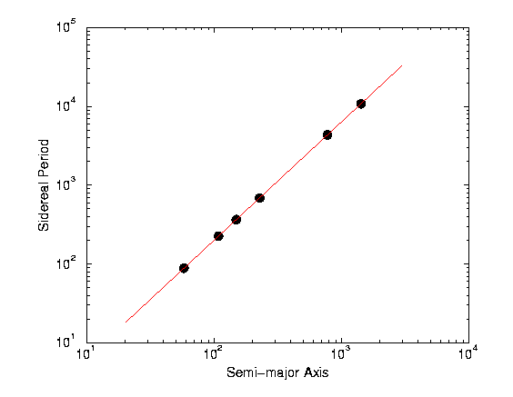

The thought is what I thought about the questions, which you may or may not actually write in the report.
First, let me try to understand the question. A table of two columns of numbers is given. The first column represents semimajor axes (apparently it is that of an ellipse). The second column represents sidereal period. What is a sidereal period? After looking through a dictionary, I found the "sidereal" means "of star". Sidereal period appears to be a period of time since it is measured in days. I guess that it is the time needed to do one revolution around the Sun, since it is 365 days for Earth. In any event, the precise meaning of the two quantities is not that relevant to this question.
Continue with the meaning of the question. We are asked to "fit this data to a power law of the form y = C x**p". The two columns of numbers appear not arbitrary or random, but governed by some unknown "law". It is of the power law. At least this is what the question tries to let me do. So, I'll use the functional form y = C * x**p. Which is x and which is y? The question did not tell me explicitly. I realized that it does not matter, if I swap the meaning of x and y (semimajor axes <-> sidereal period), all I have to do is solve x in y, given x = (y/C)**(1/p) to get the other interpretation.
Once we realized that we need to do a fit of the curve y = C*x**p, we need to plot both the data points and the curves. Yet we cannot make a plot, since we don't know the values of C and p. It appears that the critical issue to find C and p.
I propose three possible solutions to find C and p.
(a) Try and error. Since I don't know C and p, I just make a guess, for example, C=1, p=2. Obviously it did not "fit" most of the time. I have tried for one hour for many choices. I still did not find a good fit (that is, the curve falls on the points). It is certainly not a very scientific way of approaching the problem.
(b) I realized that we have two unknowns in an equation. If we use only two points from the data, say that of Mercury and Earth, we should have (x will be semimajor axis, y will be period)
87.97 = C (57.9)**p (Mercury data)
365.26 = C (149.6)**p (Earth data)
Dividing the two equations to eliminate C, I found
(365.26/87.97) = (149.6/57.9)**p, or
with help of a calculator, 4.152 = 2.58376**p. the value p can
be found by taking log, log(4.152) = p * log(2.58376), so
p = 1.4997. It is very close to 3/2. C is obtained from
87.97 = C (57.9)**(1.4997), => C = 0.1999. When I used this set
of values to plot, I found perfect fit to the Mercury and Earth.
But it did not fit others exactly.
There is some problem with this approach, since the answer is not unique. If I use Jupiter and Saturn data, I got p = 1.4995, C = 0.20027. However, they give me a good indication that the fitting parameters C and p are very close to 1.5 and 0.2 with a small errors of order 0.0002. Of course, C and p must be constants, if they depend on the points, it should not be called a power-law fit.
(c) How can we do a fitting using all the points available? It was discussed in class that we should use least-squares method. Then we have to do a minimization of the quantity
F = sum_i (y_i - C x_i**p)^2
(where x_i means x with a subscript). I can take the derivative of
F with respect to C and p, and set them to zero, but the equations so
obtained are rather messy. Although the minimization can be done in
principle, but it is not very illuminating.
Linear least-squares fitting is given in class as an example, and the solution is simple. Can we somehow do linear fit? In the current form of y = C x**p, it cannot. But I realized that we can transform the problem into a linear one if we are willing to consider log y vs log x. [Exactly how I made this connection is difficult to describe. This is, perhaps, what a scientific discovery is all about]. Let us accept that we use log, then
log y = log C + p log x
I'll call log y = w, and log x = u. So we have a linear
equation
w = log C + p*u
With this, I'll do a straight-line fit to the transformed data.
In MATLAB I'll use the following code to do the work:
data = [ 57.9 87.97;
108.2 224.7;
149.6 365.26;
227.9 686.98;
778 4332.4;
1427 10759];
logx = log(data(:,1));
logy = log(data(:,2));
coef = polyfit(logx, logy, 1);
p = coef(1)
C = exp(coef(2))
xp = linspace(3,8,40);
yp = polyval(coef, xp);
plot(xp,yp)
hold on;
plot(logx, logy, 'o')
In Mathematica, I could as well type the follows:
data={{ 57.9, 87.97},
{108.2, 224.7},
{149.6, 365.26},
{227.9, 686.98},
{778.0, 4332.4},
{1427.0, 10759.0}};
f = Fit[Log[data],{1, x}, x]
p = Coefficient[f,x]
c = Exp[ f ]/. x -> 0
g1=ListPlot[Log[data],PlotStyle -> {PointSize[0.02]}];
g2=Plot[f,{x,3, 8}];
Show[g1,g2]
In C, I'll use the subroutines from "Numerical Recipes in C", this
program do weighted least-squares so the errors can be properly
handled. A link to the fit.c is here.
We must supply the log data to the program.
In fact we don't need all these troubles, xmgr in itself also has polynormal fitting capability ever with errors [MATLAB polyfit() can find errors as well]. So xmgr gives me log C = -1.6108 +/- 0.0003, p = 1.49991 +/- 0.00005 [This is obtained by click Data -> Transformation -> Regression]. No matter what methods I used, I found the answer is the same, i.e., C = 0.1997, p = 1.4999, which is satisfying. In the end, I present the following figure (draw by xmgr, xmgr is a plotting program I find convenient to use).

To predict the semimajor axis for Ceres, we use the determined C and p and solve for x, in y = 4.5*365.26 = C * x**p, obtained x = 407.8 (million kilometers).
The fact that p equals approximately 1.5 is not surprising. as Kepler's third law says (identifying x1 and x2 with the semimajor axes of two planets and y1 and y2 the periods)
(x1/x2)**3 = (y1/y2)**2
This implies
y1/y2 = (x1/x2)**(3/2)
Thus if x2 and y2 are some fixed value, we see that y is proportional
to x to power 1.5.
Of course, Kepler's model is mathematical.
Some after thought: I realized that linear fit using log is not bad at all. In fact, it is better than using original y. As in the original (y - C x**p), we are measuring absolution errors. This is bad. It gives Saturn too much weight and Mercury too little. Using log, we are actually using relative errors, since (log y - log y(exact) ) is approximately |log( 1 - dy/y )| = |dy/y|. This is a better measure of error. The key issue in the problem is to realize that we can use linear least-squares method.
In summary, the Fourier transform can be defined as
F(v) = integral(-inf to inf) f(t) exp(-i*2*pi*v*t) dt
--- (1)
where the integral is from minus infinity to plus infinity, i = sqrt(-1), and pi = 3.1415926. There are slight variations with respect to the definition, for example, some book use angular frequency omega = 2pi v, rather than the frequency v, other divided by sqrt(2pi) or divided by 2pi, some used exp(+ i 2pi v t). Yet others use sine or cosine functions rather than exponential. Thus, it is important to clearly specify the definition.
Once we have figured out this mathematical relation, it is straight forward to calculate the Fourier transform F(v) from the function f(t).
(a) Here is a simple-minded implementation, in C. We discretize the integral with the rectangular rule
F(v) = sum(j=1 to N) f(t_j) exp(-i2*pi*t_j*v) dt
where t_j = (j-1)*dt - T/2, dt = T/N. N is the number of sampling points.
/* Compute numerically real part of Fourier Transform (i.e.
cosine transform) using a simple Riemann sum. */
#include <stdio.h>
#include <math.h>
#define N 128 /* number of sampling points */
#define T 20.0 /* range of t in [-T/2, T/2] */
double f(double t) /* input function f(t) */
{ /* change it for other functions */
return cos(6.28*t)/(t*t+1.0);
}
main()
{
int i, j;
double dv, dt, v, t, F;
dt = T/N; /* discretization size in t */
dv = 1.0/T; /* step in frequency v */
v = - 0.5/dt;
for(j = 0; j < N; ++j) { /* loop of frequency v */
F = 0.0;
t = -0.5*T;
for(i = 0; i < N; ++i) {
F += f(t) * cos(2.0*M_PI*v*t); /* M_PI = 3.14...*/
t += dt;
}
F = F*dt;
printf("%g %g\n", v, F); /* frequency vs F */
v += dv;
}
}
(b) The above program would be fine if we are dealing with small data set. When the data point size is N, the above algorithm need O(N^2) in CPU time, thus slow. The standard way is to use the fast Fourier transform (FFT). We are not gonna bother with FFT coding ourselves. The high quality FFT code should be left to the experts. Just like we don't really care how the computer do division a/b, but we need to know what it does. FFT libraries are available in various languages and from various sources. The fast Fourier transform does not do integrals, but do finite summations. It is subtly different from the integral definition of Fourier transform which got me confused at first, getting strange results I could not understood. One also need to pay attention to the slight variations in the definition of discrete Fourier transform.
One important note for FFT is that we cannot do the "fast way" if N is not a power of 2 (a good FFT should also work better if there are a lot of prime factors). Thus we will use FFT with N = 512, 1024, etc, number of points.
MATLAB's FFT (discrete Fourier transform) is defined as follows:
Y(k) = Sum(n=1 to N) x(n) exp(-i*2*pi*(n-1)(k-1)/N)
--- (2)
where k = 1, 2, ..., N. A blind application of fft() would give you "incorrect" results. We have to work out the relation of Eq.(1) and (2).
Let t_j = (j-1)*dt - T/2, when the DFT index j in real space varies from 1 to N, t_j varies from -T/2 to T/2 - dt. We have
F(v) = dt sum(j = 1 to N) f((j-1)*dt - T/2) exp( -i*2*pi* v*T*(j-1)/N + i*2*pi*v*T/2)
Let the discretized v = v_k = (k-1)/T, we can write
F_k = dt * exp(i*pi*(k-1)) * sum(j = 1 to N) f_j exp(-i*2*pi*(k-1)(j-1)/N)
Compare with the definition of FFT, we see that F_k = dt* exp(i*pi*(k-1)) [fft(f)]_k, that is, it is the fft of f with sign flipped for every other k values. Another way to avoid this extra factor is to shift the origin in the original data so that j=1 corresponding to t=0. [All you need to do is swap the left half with right half].
The range of k is from 1 to N. However, since F_k is periodic in k, that is, F_k = F_(k+N), the negative k can be obtained from large k values from k+N. The shifting of origin from edge to the center can be down with the MATLAB function fftshift. Thus our plot with v, the frequency, should be from some -V0/2 to V0/2, where v is related to k by v = (k-1)/T.
This extra complexity is unexpected, even for me, when I did it for the first time. An understanding of what fft does and what we want is essential for making it right. Here is some sample code for computing the Fourier transform and plotting with zero at the center.
N = 256 % number of fft points T = 8*pi % length of T range dt = T/N % discretization step size t = -T/2 + [0:N-1]*dt % t from -T/2 but before T/2 f = cos(6.26*t) ./ (t .* t+1.0) % change this to your function %f = cos(2*3.14*t) fs = fftshift(f) % this will move the origin to the edge y = fft(fs) % do fft yre = real(y) % plot real part only ys = fftshift(yre) % shift 0 to center ys = ys * dt % multiple by integral element v = -1/(2*dt) + [0:N-1]/T % range of frequencies, v=k/T plot(v, ys) % plot frequency v vs Real(y)Note that cos(2*pi*t) has a frequency v = 1, and have a unit of Hertz if t is time in second. If we have cos(omega*t), the angular frequency omega is related by frequency via v = omega/(2pi). The result is independent of N for sufficiently large N, as it should be.
I have plotted only the real part of the function. If the function f(t) is odd, then the real part of the Fourier transform is zero, and in that case, we should plot the imaginary part instead. Perhaps plot the power spectrum (the absolute value squared) is a better choice.
The same can also be computed with Mathematica. I think I will stop here. You can fill in the details for all the curves and plotting them on the same page.
Many students did not submit Fourier transform code! The code is important for us to judge if you have done the problem correctly.
PS: Some students forgot about complex numbers! Here is a brief summary. A complex number is of the form
a + i b
where a and b are real numbers, and i = sqrt(-1) is the imaginary unit. Some book also use j for it. i*i = i^2 = -1. a is called the real part, and b imaginary part, of the complex number. The complex conjugate of a + i b is a - i b. The modulus (absolute value) of a complex number is r = |a + i b| = sqrt(a^2 + b^2). The complex number can be represented in the polar form as
r exp(i q)
where tan q = b/a. q is called the phase or argument of the complex number. The Euler's formula is
exp(i q) = cos(q) + i sin(q)
thus a = r cos(q), b = r sin(q). The Euler's formula relate exponential function to sine and cosine functions.
PS2: Most students did not care about the x-axis scale in the frequency domain, and plotted against FFT index. Since you did not care how the FFT is related precisely to Fourier transform definition, your vertical scale (the value of F, or y-axis) is not right, either. Most of students also did not discuss what is a Fourier transform and thought it is standard. No, it is not. The use of FFT is tricker than you thought. If you don't understand it, it may be more productive to use the straightforward numerical integration, as the one I give in the C example program. What I am interested is how you generated from the time function f(t) to its Fourier transform F(v), and do it correctly [according to your own definition of F(v)], not the specific form of functions for the curves you proposed. What we are doing here is science, not art.
Total marks for Q1 is 40. If your prediction of Ceres radius is wrong, 10 marks will be deducted.
Total marks for Q2 is 60. If you did not give the correct frequency scale, 10 marks will be deducted. If your vertical scale (y axis) is not right, 5 marks will be deducted. If you did not discuss what is your Fourier transform, 5 marks will be deducted.
In general, if your report is difficult to read, 5 marks will be deducted.
If you hand in late by one day, 10 marks will deducted; if you hand in late by two days, 20 marks will be deducted. We'll not accept your hand in if more than two days late.